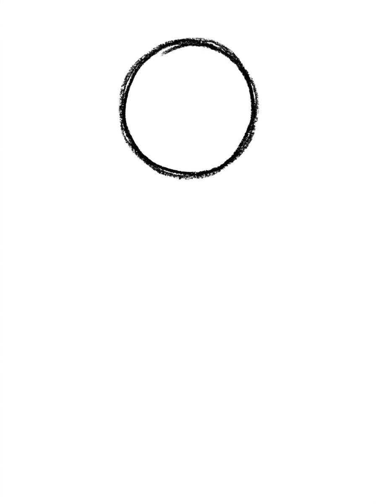
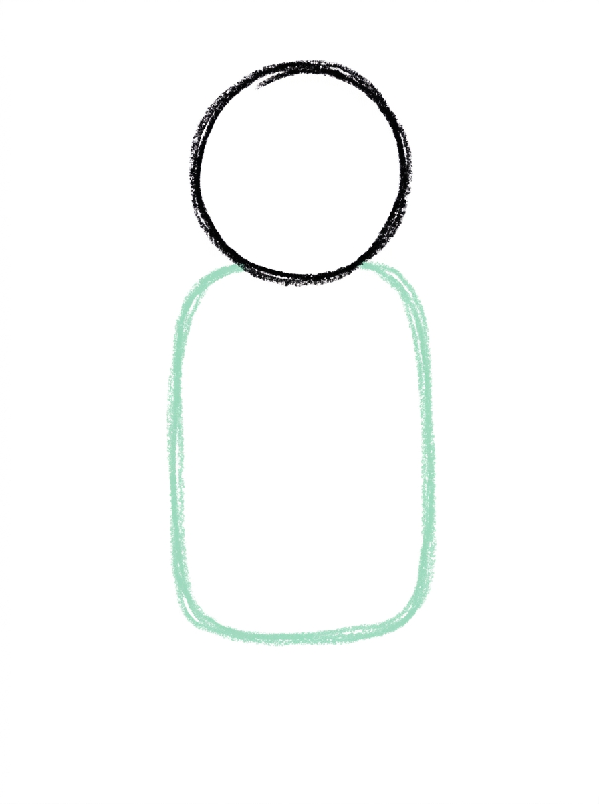
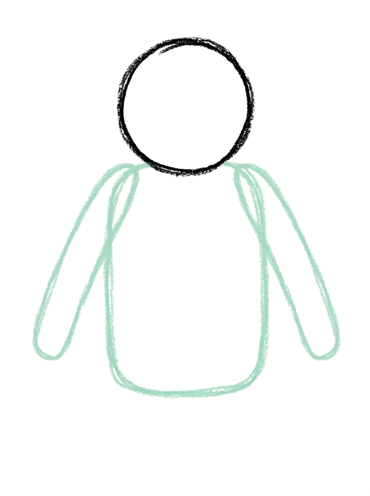
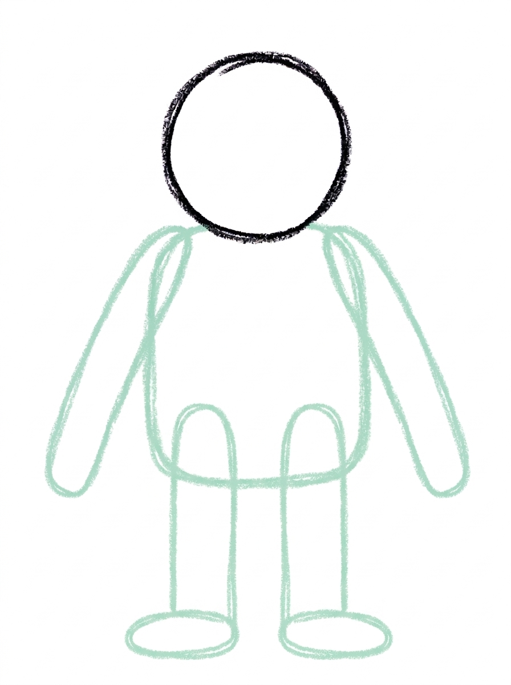
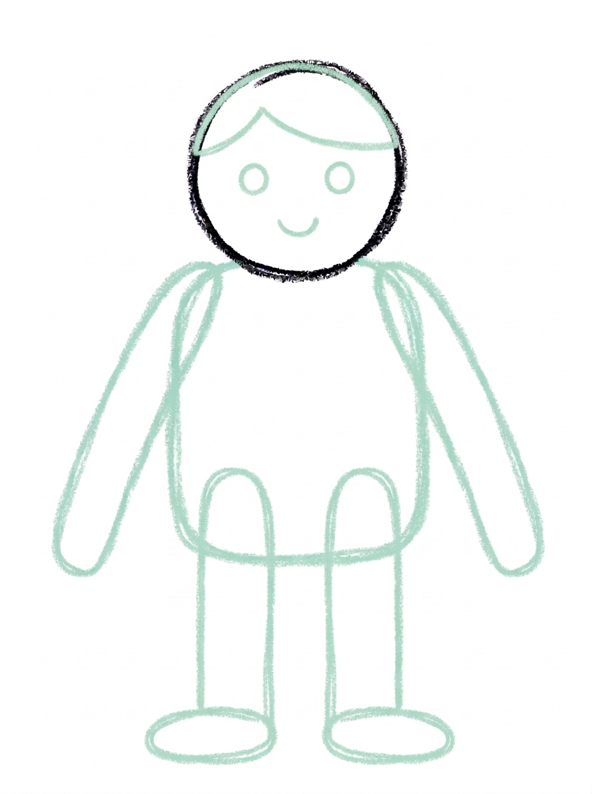

Person Drawing for Kids How to Draw A Person in 6 Easy Steps
Quick Answer
Draw a person in six easy steps: start with one circle head, add a rounded-corner body under it, add a tube arm on each side and two long legs with oval feet, draw a hair line, dot eyes and a smile, then color it in. Made for ages 3 and up — no signup needed, just print and draw.
At a Glance
- Subject: How to draw a person
- Ages: 3+
- Steps: 6 steps
- Time: ~15 min
- Difficulty: Easy
- Supplies: Paper, crayons
Drawing a person is usually the first thing a child wants to learn, and this tutorial builds one the snowman way: a circle head stacked on a body, with arms and legs that attach where they should. Big head, friendly smile, bright shirt — it is a person any kid can finish and recognize.
✏️ Draw Your Person in 6 Easy Steps
One step per box — this step by step person drawing shows each new part in a different color so kids can see exactly what changed.
Step 1: The Head

Draw one circle. This is your person's head.
Step 2: The Body

Draw one shape with rounded corners below the head, so the head sits on top of it like a snowman's head. This is the body.
Step 3: The Arms

Draw two arm shapes, one on each side of the body — each arm a long rounded tube angled slightly downward, starting from the body's side below the head.
Step 4: The Legs

Draw two legs below the body, each one a straight rounded tube. At the bottom of each leg, draw one flat oval for the foot.
Step 5: The Hair and Face

Draw one curved line across the top inside of the head circle — this is the hair line. Below it, draw two round dot eyes and one small curved smile.
Step 6: Color It In

Color your person! Brown for the hair above the curved line, warm skin tan for the face and arms, bright red for the shirt body, blue for the pants legs, black for the shoes and eyes, and dark brown for the mouth. Great drawing!
📊 Person Drawing by Age
Every age can join in — just adjust the job.
| Age | What they can do | Tip |
|---|---|---|
| 3-4 | Draw the head circle and the body shape, and color the shirt and pants. | Draw the head high on the page — the body, legs, and feet all need the space underneath it. |
| 4-5 | Add the arms, legs with oval feet, and the dot eyes with a smile. | Arms start from the body's sides, below the head — pointing that out once prevents the classic arms-from-the-head drawing. |
| 6+ | Complete all six steps solo and start changing the hair and outfit colors to make different people. | Ask who the person is — naming them makes kids care about the details. |
🖨️ Download Your Free Person Drawing Printable
The printable lays out all 6 steps one per box, big enough for little hands — kids draw right alongside each step.
⬇️ Open Free Printable 🖨️ Print🎁 Free printable for ages 3+
🧍 Draw Your Whole Family
Once one person is standing on the page, line up the whole family next to them. Repeat the same six steps at different heights — tall grown-ups, medium kids, one tiny toddler — and change just the hair and shirt color for each one so everyone is recognizable. Add your family pet as a small circle-head friend beside the group, and sign the portrait at the bottom.
What You'll Need to Draw A Person
All you need is a pencil, an eraser, and the printed tutorial page. For coloring, the example uses brown for hair, a warm skin tan for the face and arms, bright red for the shirt, blue for the pants, and black for the shoes — but encourage your child to match their own family's hair, skin, and favorite outfit colors instead.
What They're Learning
This tutorial practices the basic construction of the human figure: a circle head stacked on a rounded-corner body, tube shapes for arms and legs, and ovals for feet. Kids learn where parts attach — arms to the body, legs below it, face inside the head — and the hair line introduces the idea of dividing one shape into two areas with a single curved line.
Make It Yours
Change the hair line to make different people: a zigzag for spiky hair, two circles on top for buns, or a flat line for a cap. The same figure becomes a superhero with a triangle cape behind the body, a dancer with the arms raised, or a soccer player with a circle ball at one foot. Coloring the shirt in team colors or a favorite pattern makes each version personal.
🛒 Our Favorite Drawing Supplies
These are the supplies we reach for in our own home — washable (because kids), quality paper, and enough colors to avoid fights.
As an Amazon Associate, MomYouNeedThis earns from qualifying purchases — at no extra cost to you.
💡 Person Drawing Tips for Parents
Placement is everything in step one: the head circle must start high, in the top third of the page, with lots of empty space below it. A head drawn in the middle leaves no room for long legs, and the figure ends up squished at the bottom. If your child starts low, it is worth erasing and moving the head up before anything else is added.
Watch where the arms attach in step three. Arms that start from the body's sides, below the head, are what make this figure read as a proper person instead of a snowman with sticks. If an arm sneaks up beside the head, a quick erase and re-draw lower down fixes the whole drawing's look.
✏️ Person Drawing Step by Step
This person drawing is stacked like a snowman: one circle head sitting on top of a rounded-corner body, the arms and legs attached to the body, and the face saved for last, inside the head. Building the figure as a stack is what keeps every part in its proper place — nothing sprouts out of the head, and each new shape lands on a part that is already standing.
The sizing that matters is the body's width. The body should be about as wide as the head, so the head sits on it the way a snowman's head sits on its middle ball. A body drawn much narrower leaves the head looking perched and tippy, and gives the arms nothing solid to hang from — widening the body's sides is an easy fix while it is still just one shape.
Plan the face's space at the same time. The hair line in step five runs across the top inside of the circle, and the eyes and smile need the room below it. A hair line drawn through the middle of the circle squeezes the face into the bottom half, so check its height before the eyes go in.
See free person printable for more.
✏️ One Shape Per Step, Six Steps Total
Check the person drawing at the moments when one erased line can still fix everything. After step two comes the snowman test: the head should still be a complete circle, sitting on top of the body. If the circle has merged into the body and its bottom half has vanished, the figure reads as one blob instead of a head on a body.
After step four, do the standing test: both legs should end in flat oval feet at the same height, so the person stands level. One foot floating higher than the other makes the whole figure look as if it is tipping over, and lengthening the shorter leg is a ten-second fix.
After step five, check the face layout inside the circle: the hair line stays in the top part, both dot eyes sit below it side by side, and the smile curves underneath them. In step six, the brown hair colour should stop at that line — colour below it is no longer hair.
See free person printable for more.
👨👩👧 One Person Becomes Anyone
The same six steps become a whole cast with tiny changes. Keep the construction identical and vary the signals kids actually read: hair colour and skin tone from the step six palette, a taller body for a grown-up, a smaller copy of everything for a little sibling.
Two shape swaps stretch it further. Widen the body's bottom edge into a triangle and the shirt becomes a dress; add a triangle flowing behind the body and the person has a superhero cape. Neither changes a single step — they are decorations hung on the same stack.
The natural project is a family line-up on one long sheet: one figure per person, side by side. Lined up together, the size and colour differences do all the storytelling, and your child ends up with a portrait that actually looks like your family.
See free person printable for more.
❓ Person Drawing FAQs
What is the easiest way to draw a person for kids?
Stack the figure like a snowman: one circle head high on the page, a rounded-corner body under it, a tube arm on each side of the body, two legs with oval feet, then a hair line, dot eyes, and a smile.
What age is this person drawing for?
It is made for ages 3 and up. Younger kids can do the head, body, and coloring, while older kids can manage the arms, legs, and face on their own.
What supplies do we need?
Just a pencil, an eraser, and crayons or markers in hair, skin, and clothing colors your child chooses.
Is the printable really free?
Yes — every printable on MomYouNeedThis is 100% free to download and print. No signup, no payment, just tap the download button.
How do I print the person tutorial?
Print at 100% scale, not 'fit to page', so the step pictures stay their true size. Regular letter paper works perfectly.
Why does the head need to start at the top of the page?
The body, long legs, and feet all stack underneath the head. Starting the circle in the top third leaves room for everything; a head in the middle of the page leaves the legs squished.
Why do the arms start from the body and not the head?
Arms attach to the body on a real person. Drawing them from the body's sides, below the head, is what makes the figure read as a person instead of a head with sticks.
Can my child draw themselves or our family?
Yes — that is the best use of this tutorial. Keep the same six steps and change the hair style, hair color, skin tone, and shirt color for each family member.
📚 Keep Exploring
- ✏️ All 53 Drawing Tutorials 53 free step-by-step drawing tutorials for kids.
- 🎀 Cute Coloring Free cute coloring pages for kids.
- ✏️ Drawing Practice Free printable drawing pre-writing worksheet for toddlers.